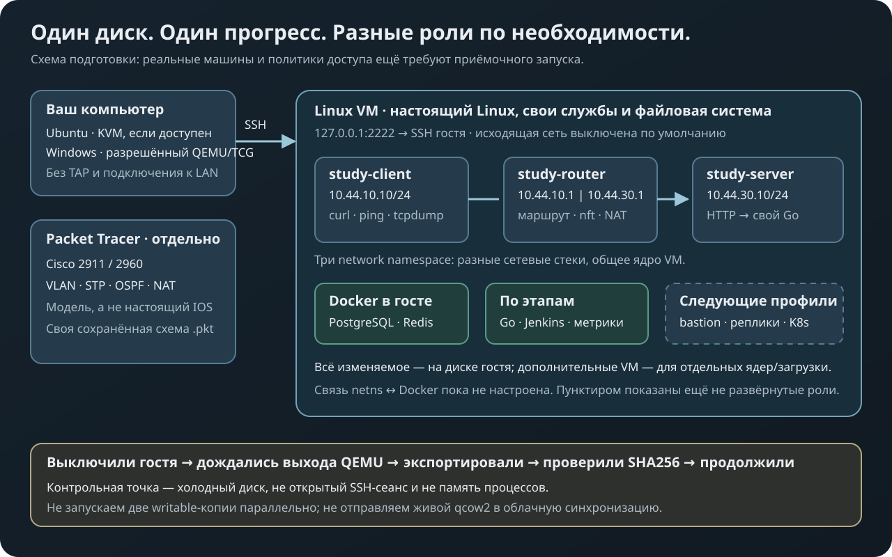

Личный практикум · подготовка 1 ноября 2026
Один мир для сети,
Linux и своих сервисов
Настраиваем знакомые машины, сохраняем работу и продолжаем в следующей главе. Сеть приводит к серверу, сервер — к Go и PostgreSQL, а ручной выпуск — к Git и Jenkins.
Каждый новый инструмент ты сам находишь, скачиваешь, устанавливаешь и настраиваешь по заданию. Следующие задачи развивают этот же экземпляр; ошибочная настройка сохраняется до твоего исправления. Для офлайн-занятия заранее собираются установочные материалы, а не готовые ответы.
Сейчас подготовлены управляющий код, конфиги и упражнения. Образ ОС и установщики не включены; SSH/RDP/VNC до подготовки имеют статус setup-required. Сквозной GitHub handoff, Windows-комплект и CLI Packet Tracer ещё не приняты. Реальная Linux seed-проба принимается отдельно.

Настоящий Linux
Одна VM, SSH через localhost, постоянный диск, холодные точки и возврат в новую ветку. Docker запускается внутри гостя, когда нужен по теме.
lab start / stop / status / retry →Контроллер GitHub handoff Python
Устройства Cisco
Два маршрутизатора, три коммутатора, VLAN, STP, два пути OSPF, DHCP, DNS, NAT и ACL. Конфиги оригинальные, сборка .pkt предстоит в самом приложении.
Собрать схему и пройти упражнения →Пакет в ядре Linux
Клиент, маршрутизатор и сервер в трёх network namespace. Настоящие ip, tcpdump, curl и nft внутри VM.
Скрипт создания сети
Вся программа
От консоли восстановления и bastion до приложения, данных, измерений, выпуска, автоматизации и Kubernetes. У каждого этапа есть ограничения, доказательства результата и путь назад.
Открыть том практикума →Карта 23 заданий и готовность
Продолжать дома и на работе
Флэшка в переносе VM не участвует. lab start получает последнее проверенное холодное поколение из отдельного PRIVATE GitHub repo; lab stop после подтверждения выключения фоном отправляет новое. Пока status не покажет synced, другой ПК не получает lease на старую версию. Обрыв продолжают через lab retry; диски в Git не коммитятся.
Что сохраняется, а что надо настроить постоянно
Файлы и базы на диске остаются. Открытые сеансы, память процессов и временные network namespace исчезают при выключении. Сохранить маршрут и правило firewall в понятной загрузочной конфигурации — часть упражнения.
Почему Docker внутри VM
Контейнеры используют ядро Linux-гостя и экономят память. Docker на рабочем Windows для этого варианта не нужен. Отдельные VM добавляем для загрузчика, других ядер и настоящей границы машин.
Что необходимо разрешить на рабочем компьютере
Запуск локальных QEMU/интерпретатора и доступ к своему PRIVATE GitHub должны быть разрешены. Переносимый комплект не даёт гарантии отсутствия системных журналов, антивирусных событий и подкачки. Контроллер не устанавливает службы, драйверы и гипервизор.
Если выберем VPS
SSH — основной текстовый доступ; VNC нужен для графической консоли. Фактический отклик сначала проверяем на своём канале. Интернет становится условием работы; вложенная виртуализация и импорт qcow2 у провайдера не предполагаются автоматически. Сервер пока не куплен и не настроен.
Перед первым офлайн-занятием
- Подготовить разрешённые QEMU/Python и Ubuntu из официальных источников, установить гостя дома.
- Настроить SSH/консоль и заранее загрузить зависимости нужных упражнений внутрь гостя.
- Пройти два задания, выключить ОС, сохранить точку, сломать копию и проверить возврат.
- Завершить GitHub handoff, проверить SHA256 и запуск на втором разрешённом ПК; затем заниматься локально. Без принятого образа и служб доступ обозначается setup-required.
Шаблон офлайн-зависимостей · Проверка файлов · Официальные источники
Книга не запускает программы при открытии страницы. Установщики, образы, личный прогресс и ключи в публичный репозиторий не входят.